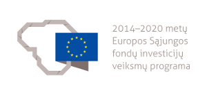

<h3>In 2020-2023 we are working on two projects co-financed by the European Social Fund:</h3>
<ul>
	<li><h4>Nr. 08.6.1-ESFA-T-927-01-0421: Informal education and employment of refugees and immigrants in makerspaces of Vilnius</h4></li>
	
	</li>

	<li><h4>08.6.1-ESFA-T-927-01-0182: Acceleration of young business subjects in independent makerspaces</h4></li>
	
<br />

<p>
Contact us: <a href="mailto:crew@technariumas.lt">crew(a)technariumas.lt</a><br />
</p>
